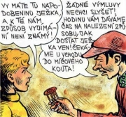

Časopis Vpřed s Rychlými šípy
Znak českých skautů
|
KNIHY PRO KLUKY A HOLKY
Vedle knih pro děti byly stále oblíbenější příběhy pro chlapce a dívky. Dokonce začaly vycházet specializované edice románových sešitů jako Večery pod lampou nebo Romány do kapsy, které byly velmi levné. Čtenáři nacházeli v tzv. rodokapsech hlavně dobrodružné příběhy. Psali je většinou nevýznamní autoři literárního čtiva, kteří si volili zajímavé pseudonymy.
Kvalitnější literaturu pro chlapce vytvářeli spisovatelé Štorch nebo Foglar, pro dívky zase spisovatelky Majerová či Benešová. Dobovým fenoménem byly knihy o Kájovi Maříkovi. Vycházely i specializované časopisy pro mládež, nejdelší tradici měl Malý čtenář (1882-1941).
Velmi populární byly první komiksy. Jako ilustrátor knih pro mládež proslul malíř Zdeněk Burian.
Smysluplné využití volného času a pobyt v přírodě nabízely dětem skautské a junácké oddíly. Po roce 1948 se ale stal oficiální organizací sdružující komunistickou mládež Pionýr. Skautské hnutí muselo přejít do ilegality a vedoucí junáckých oddílů byli pronásledováni. V roce 1968 byl Junák dočasně obnoven, trvale až po roce 1989.
Burian: Mamuti
|
Rodokapsy
V letech 1935 až 1951 vyšlo v různých edicích přes 2000 rodokapsů. Těmto románovým sešitům dala jméno nejstarší a nejrozsáhlejší edice nenáročného čtiva Romány do kapsy. Rodokapsy byly rozčleněny do ustálených „žánrů“ jako detektivní, dobrodružný nebo špionážní román, červená knihovna (milostná romance), dobrodružný román z leteckého prostředí, western atd.

Obálka rodokapsu
Vycházejí edice sešitových románů i dnes? Čteš tuto literaturu? Proč?
|
Eduard Štorch (1878-1956)
Štorch pocházel z Ostroměře u Hořic a zemřel v Praze. Pracoval jako učitel, propagoval vyučování v přírodě a na Libeňském ostrově v Praze vybudoval dětskou farmu. Snažil se čtenářům přiblížit poutavou formou období pravěku, starověku i středověku na našem území. Napsal knihy Lovci mamutů, Osada Havranů, Bronzový poklad, Volání rodu, Minehava, Junáckou stezkou, Zlomený meč, Zastavený příval, O Děvín a Velehrad nebo Meč proti meči.
|
Eduard Štorch: Lovci mamutů
Próza Lovci mamutů se odehrává v době kamenné. Hlavní postavou je chytrý mladík Kopčem, který žije v tlupě lovců mamutů. Dějištěm jsou různá místa Čech a Moravy, po kterých tlupa putuje, většinou za novými lovišti. Autor využívá nejnovější poznatky z archeologie a snaží se čtenáře nejen pobavit, ale také poučit.
|
Burian: Kromaňonec
Převyprávěj děj ukázky.
|
Jaroslav Foglar (1907-1999)
Foglar se narodil v Praze, kde také zemřel. Redigoval časopisy Mladý hlasatel, Junák a Vpřed. Přišel s myšlenkou čtenářských klubů. Po roce 1948 nemohl publikovat. Propagoval skauting a Junáka, sám měl přezdívku Jestřáb. Ve svých knihách o dospívání oslavuje život v klukovských partách a propaguje aktivní přístup k životu, lidskou soudržnost i další kladné životní hodnoty. Je autorem románů Boj o první místo, Chata v Jezerní kotlině, Když Duben přichází, Hoši od Bobří řeky nebo Pod junáckou vlajkou. Psal scénáře pro komiksy o klubu Rychlých šípů, na které navázal v románech Záhada hlavolamu, Stínadla se bouří a Tajemství Velkého Vonta.
Co víš o skautech a Junáku?
Znáš někoho, kdo navštěvuje podobné oddíly?
Co se v nich odehrává?
Jak se plní bobříci?
Jaký je rozdíl mezi Pionýrem a Junákem?

Foglarův oddíl
|
Jaroslav Foglar: Záhada hlavolamu
V románě Záhada hlavolamu zažívají členové klubu Rychlé šípy Mirek Dušín, Jarka Metelka, Jindra Hojer, Červenáček a Rychlonožka řadu dobrodružství v tajemné čtvrti Stínadla. Během vydávání časopisu TAM-TAM se dostávají na stopu různým záhadám. Při výpravě do Stínadel, která střeží parta Vontů, najdou deník Jana Tleskače. Dočtou se v něm o jeho převratném vynálezu a jak funguje „ježek v kleci“ – kultovní hlavolam Vontů. Rychlé šípy zasáhnou do sporu o volbu Velkého Vonta. Chtějí pomoci Losnovi proti Mažňákovi, ale jejich plán, jak zjistit, co obsahuje záhadný hlavolam, ztroskotá.
Rychlé šípy vycházely jako komiks v časopise Mladý hlasatel od roku 1938. Úhlavním nepřítelem Rychlých šípů bylo bratrstvo Kočičí pracky.
Foglar, Čermák: Rychlé šípy žijí modrým životem
|

Které postavy vystupují v ukázce? Co se o nich dozvídáme?
Které záhady zůstávají v ukázce neobjasněny? Proč?
Zkuste společnými silami vytvořit komiks.

Foglar, Fischer: Rychlé šípy: Rychlonožka v říši snů
|
Felix Háj (1887-1934)
Spisovatelka Marie Černá žila v Mníšku pod Brdy. Vystudovala učitelský ústav a později působila jako varhanice a učitelka hudby. Po rozvodu pracovala jako hospodyně na faře. Publikovala pod pseudonymem Felix Háj. Nejznámější je její cyklus o Kájovi Maříkovi – Školák Kája Mařík (7 dílů), Kája Mařík v pohádce, Kájovy nejmilejší pohádky, Kájovy prázdniny, Kájovo mládí, Kájovy radosti a trampoty, Kájova dobrodružství od posvícení do jara, Příhody Káji Maříka a Kájovy děti. Populární byl též románový cyklus Řídících Márinka (5 dílů).
|
Felix Háj: Školák Kája Mařík
Rozsáhlý cyklus výchovných próz, jejichž hrdinou je Kája Mařík, začíná chlapcovým nástupem do školy, kam se mu zprvu příliš nechce. Nakonec se mu ale ve škole zalíbí a stane se premiantem. Ve městě i v rodné hájovně prožívá řadu malých dobrodružství. Kája je vzorem zbožného a hodného chlapce, i když občas provede nějakou klukovinu. V dalších knihách můžeme sledovat jeho osudy až do dospělosti.
|
Výtvarník Zdenek Rykr navrhoval obaly pro čokoládovnu Orion.
Charakterizuj Káju Maříka.
Jak se projevuje Kájova zbožnost?
Myslíš si, že se lidé od té doby změnili? Proč?
Jak nazývají křesťané jednotlivé dny velikonočních svátků?
Co víš o Velikonocích?
|
Marie Majerová (1882-1967)
Spisovatelka, která psala pod pseudonymem Majerová, se narodila jako Marie Bartošová v Úvalech u Prahy a zemřela v Praze. Hlásila se k anarchismu a komunismu. Roku 1929 byla vyloučena z KSČ. Psala hlavně romány se sociální tematikou. Je autorkou knih Panenství, Náměstí republiky, Přehrada, Siréna nebo Havířská balada. Dívkám byla určena její novela Robinsonka.
|
Marie Majerová: Robinsonka
Titulní hrdince Blaženě Borové zemřela ve 14 letech maminka. Dívka zůstává sama s tatínkem a novorozeným bratříčkem Péťou a snaží se s těžkou životní situací vyrovnat. Bláža se postupně naučí obstarat domácnost a rychle dospívá. Připadá si ale jako Robinson Crusoe, který skončil sám na pustém ostrově. Svět dětského snění, her a fantazie se prolíná se skutečným životem Robinsonky.
|

Charakterizuj Blážu.
Proč Blažena odmítla sousedčinu pomoc?
Jsi samostatný/á? Dokážeš se postarat o domácnost?
Mají děti, které přišly o rodiče, těžší život? Proč?
Jak bys jim mohl/a pomoci?
|
Božena Benešová (1873-1936)
Benešová se narodila v Novém Jičíně a zemřela v Praze.
Je autorkou románu Člověk a trilogie z doby 1. sv. války Úder, Podzemní plameny a Tragická duha. Pro dívky napsala povídku Don Pablo, don Pedro a Věra Lukášová.

Burianova ilustrace
|
Božena Benešová: Don Pablo, don Pedro a Věra Lukášová
Hlavní hrdinkou povídky Don Pablo, don Pedro a Věra Lukášová je osiřelá dívka Věra Lukášová, kterou vychovává odtažitá babička. Samotářská Věrka navštěvuje gymnázium a často si hraje s donem Pablem a donem Pedrem, což jsou dva míče, kterým se svěřuje se svými starostmi. Nakonec najde spřízněnou duši ve studentu Jaroslavovi, kterého zprvu nenáviděla. Autorka přesvědčivě líčí vnitřní svět dospívající dívky i její konflikty s dospělými.
Další autoři a jejich díla
Karel Poláček: Bylo nás pět, Edudant a Francimor
Eduard Bass: Klapzubova jedenáctka
Václav Běhounek: Trosečníci polárního moře, V říši věčného ledu a sněhu
Jan Welzl: Třicet let na zlatém severu, Po stopách polárních pokladů, Trampoty eskymáckého náčelníka v Evropě
Václav Řezáč: Poplach v Kovářské uličce, Kluci, hurá za ním
J. V. Pleva: Malý Bobeš
Ivan Olbracht: Čtení z Biblí Kralické, Ze starých letopisů, O mudrci Bidpajovi a jeho zvířátkách
|

Jan Štursa: Puberta
Co si myslíš o panu Lábovi?
Jaká je Věra Lukášová?
Jak by ses z podobné situaci zachoval/a ty?
Jan Eskymo Welzl
|
Internetové stránky
Foglar
Foglar
Foglar
Foglar
Blahuš: Agent Jaroslav Foglar, článek
Foglar
Foglar
Foglar: Stínadla se bouří, Tajemství Velkého Vonta, Záhada hlavolamu
Štorch
Burian, ilustrátor
Burian, ilustrace
Walica: Zdeněk Burian, článek
Rychlé šípy
Doležal: Rastaskauti, článek
Tipy
Adam
Morseova abeceda
Skaut
Sukova studijní knihovna literatury pro mládež
Dřevěné hlavolamy
Nakladatelství Skauting
Sbírka čokoládových obalů
Josef Čapek: Fantomas
|
Doporučená četba
Bláhová, Míťa: Dramatická výchova, Skauting, Liberec 1999
Břicháček, Václav: Skautský oddíl, Skauting, Liberec 1992
Clair, R., Tichý, J.: Comics, SNDK, Praha 1967
Český komiks (?) a výtvarné umění, České muzeum výtvarných umění, Praha 2002 (katalog k výstavě)
Foglar, Jaroslav: Hoši od Bobří řeky, Blok, Brno 1969
Foglar, J.: Kronika Hochů od Bobří řeky, Olympia, Praha 1996
Foglar, J.: Rychlé šípy (5 sešitů)
Foglar, J.: Rychlé šípy, Olympia, Praha 2001
Foglar, J.: Skautské hry v klubovně, Skauting, Liberec 1991
Foglar, J.: Záhada hlavolamu, Blok, Brno 1968
Foglar, J.: Život v poklusu, Olympia, Praha 1997
Háj, Felix: Školák Kája Mařík (7 svazků), TJ Bohemians, Praha 1990
Hulpach, Vladimír: Století Zdeňka Buriana, Knižní klub, Praha 2004
Janáček, Pavel, Jareš, Michal: Svět rodokapsu, Karolinum, Praha 2003
Kakáč, Bohumil: Kdo byl Eduard Štorch, Albatros, Praha 1986
Majerová, Marie: Robinsonka, ČSS, Praha 1973
Moldanová, Dobrava: Božena Benešová, Melantrich, Praha 1976
Pírek, Zdeněk: Čtenářské kluby Jaroslava Foglara, Delfín, Brno 1990
Prokop, Vladimír: Zdeněk Burian, Gallery, Praha 2005 (katalog k výstavě)
Sebrané spisy Jaroslava Foglara (23 svazků)
Skauti za mřížemi totality, Ostříž, Praha 1993
Skauting, Skauting, Liberec 1995
Skautské hry v přírodě, Skauting, Liberec 1991
Skautské hry ve městě, Skauting, Liberec 1994
Studenovský, T., Bláha, J.: Slovník českých autorů knih pro chlapce, Ostrov, Praha 2000
Štorch, Eduard: Bronzový poklad, Albatros, Praha 1979
Štorch, E.: Lovci mamutů, NNDK, Praha 1954
Štorch, E.: Minehava, Albatros, Praha 1973
Toman, Jaroslav: Trivialita a kýč v literatuře pro děti a mládež, CERM, Brno 2000
|
Vypracuj písemný referát o některé z uvedených knih.

Ukázka z komiksu Rychlé šípy
Hlavolam ježek v kleci
|
|